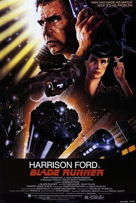

银翼杀手 / Blade Runner
又名：公元2020 / 叛狱追杀令 / 刀刃警探
作品信息
| 导演 | 雷德利·斯科特 |
| 编剧 | 汉普顿·范彻 / 大卫·韦伯·皮普尔斯 / 菲利普·迪克 |
| 主演 | 哈里森·福特 / 鲁格·豪尔 / 肖恩·杨 / 爱德华·詹姆斯·奥莫斯 / M·埃梅特·沃尔什 / 达丽尔·汉纳 / 威廉·桑德森 / 布里翁·詹姆斯 / 乔·托克尔 / 乔安娜·卡西迪 / 吴汉章 / 摩根·保罗 / 凯文·汤普森 |
| 类型 | 科幻 / 惊悚 |
| 制片国家/地区 | 美国 / 英国 / 中国香港 |
| 语言 | 英语 / 德语 / 粤语 / 日语 / 匈牙利语 / 阿拉伯语 |
| 上映日期 | 1982-06-25(美国) |
| 片长 | 117分钟(最终剪辑版) / 116分钟(导演剪辑版) |
| IMDb | tt0083658 |
说过什么
2019-10-13 16:24:14
广播 · 看过
最后一次看到是 2026-08-01T11:05:48+10:00 · 豆瓣原页